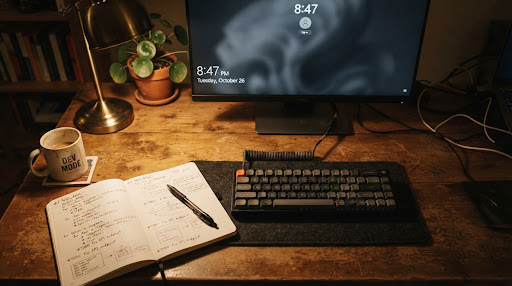

LockscreenGif — Animated lock screen video & GIF engine for Windows 11.
Windows Settings artificially clamps the lock screen to static photos or web slideshows. LockscreenGif injects pre-rendered frame caches directly into the OS SystemData pipeline without background daemons, process hooks, or battery drainage.

Engineered for physical workstations, not telemetry servers.
Modern desktop software has surrendered to bloated electron webview shells that chew hundreds of megabytes just to display an animation loop. LockscreenGif was built with classical Win32 and native WinUI 3 discipline: compile small, utilize the operating system’s existing caching subsystems, and terminate the moment the task is complete.
Native subsystem frame injection sequence
Unlike live desktop wallpaper managers that keep chromium instances permanently looping in memory, LockscreenGif populates the native Windows lockscreen frame buffer and cleans up.
Input & Ingestion
Accept raw files
Directly ingest animated GIF or video containers (.mp4, .webm, .avi, .mov, .mkv). Native GIF files bypass transcoding completely to preserve original palette quantization; video inputs route into an internal FFmpeg demuxer.
Trim & Frame Prep
Color quantizationVideo streams are processed via Gifski by Kornel Lesiński for per-frame color quantization. The editor normalizes frame rate (FPS), rasters precisely to the active display aspect ratio, and clamps loop durations under 10 seconds for minimal disk footprint.
Elevation & Injection
Single UAC transaction
The main WinUI 3 process runs as a standard unprivileged user. When “Set Lock Screen” is confirmed, a micro-helper executable triggers a single UAC prompt, writes the authored frame array into the protected Windows \ProgramData\Microsoft\Windows\SystemData directory, and exits immediately.
OS Subsystem Takeover
0 MB active footprintWith the disk write verified, all LockscreenGif tasks terminate. The native Desktop Window Manager (DWM) lock subsystem cycles the cached frames automatically whenever the session locks (Win + L). Zero background services, zero telemetry daemons, zero battery impact.
The status confirms that raster frames and cache descriptors have been written to the NTFS volume without error. Windows does not render the sequence while your user session is unlocked. Press Win + L to test. If the image is frozen, ensure Windows Animation effects is enabled in Accessibility settings.
In Windows 11 25H2 preview builds, an internal Microsoft testing flag pauses progression on custom lockscreen buffers. LockscreenGif includes a hardware switch under Settings > 25H2 Compatibility Mode that patches this flag in the staging table. Toggle it and restart your machine.
System constraints & verified distribution packages
Binary checksums and hardware parameters for production workstations. Run portable or install with start menu shortcuts.
Installs start menu shortcuts and cleanly registers into Windows Apps & Features uninstaller.
Download LockscreenGif-v1.2-x64.msiSelf-contained executable folder. Leaves zero registry footprints; requires external .NET 10 runtime.
Download LockscreenGif-v1.2-x64.zipGet-FileHash .\LockscreenGif-*-x64.msi -Algorithm SHA256
As an open-source tool, binaries are community-compiled without an EV certificate. If Windows SmartScreen prompts on first run, select More info > Run anyway after verifying hashes.
Workstation troubleshooting & diagnostic procedures
Detailed checklist for resolution of frame freezes, docking station aspect switches, and elevated security boundaries.
The lock screen shows a single static image without animation. What is the fault?
Verify this three-point failure checklist:
- Animation effects disabled: Open
Settings > Accessibility > Visual effectsand confirm Animation effects is switched to ON. If toggled off, Windows halts all frame ticks on the lock screen. - Mode mismatch: Open
Settings > Personalization > Lock screenand ensure the background is set strictly to Picture (not Windows Spotlight or Slideshow). - 25H2 Flag: If your system is running Build 26200+, check the in-app Feature ID 38943831 fix toggle and restart your machine.
Does this process consume battery, memory, or GPU compute while unlocked?
No. LockscreenGif is completely dead during normal workstation use. It does not spawn background services, tray daemons, or polling workers. Once the cache write completes, the LockscreenGif process exits.
During active lock screen display, the Windows Desktop Window Manager (DWM) natively cycles the frames with GPU acceleration, which stops completely when monitors enter display sleep.
Why does applying a GIF trigger a User Account Control (UAC) prompt?
The OS lock screen cache resides in C:\ProgramData\Microsoft\Windows\SystemData, which is protected by default Windows ACLs. The main LockscreenGif user interface runs unprivileged. When “Set” is clicked, an isolated helper binary requests elevation to write the frames into this folder, then exits immediately.
How do I remove the animation and revert to factory lock screen behavior?
Within LockscreenGif, click the Remove Animated Lockscreen action button (or Settings > Purge Cache & Revert). Alternatively, open Windows Settings > Personalization > Lock screen and choose any default static photo or Windows Spotlight.
Black bars or stretched frames appear after switching monitors or docking.
Frame sequences are rasterized specifically to the active resolution of your primary display at export time. When plugging into an external monitor or docking station with different dimensions, open LockscreenGif and re-click “Set lock screen” to re-generate the frame buffer for your new resolution.
How does the built-in Diagnostics workflow and test work?
Under the app’s Diagnostics panel (Diagnostics tab), clicking Start Test starts a 5-second countdown and locks your workstation via LockWorkStation(). When you log back in, it inspects whether the cache was loaded by DWM and exports an archive of debug telemetry you can attach directly to GitHub issues.
Heritage & local compilation
Free software under the MIT License. Developed in WinUI 3 with Windows App SDK and .NET 10.
Maintained by SubhamPro11, built upon original architecture concepts by Leapward-Koex. Zero proprietary analytics, zero network pinging.
# 1. Clone repository and submodules git clone https://github.com/SubhamPro11/lockscreengtf.git cd lockscreengtf # 2. Restore dependencies and compile WinUI 3 targets dotnet restore dotnet build -c Release -p:Platform=x64 # 3. Publish single-directory binaries dotnet publish -c Release -r win-x64 --no-self-contained